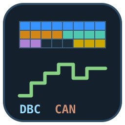
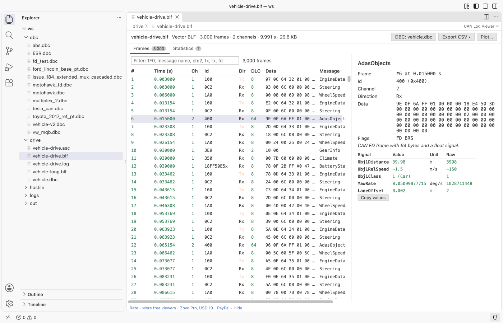
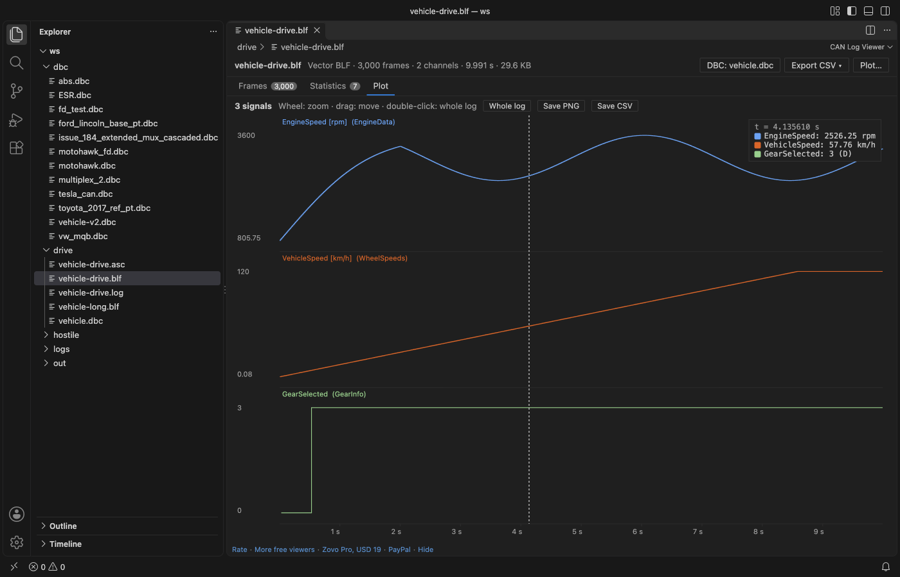

DBC Viewer & CAN Log Viewer (BLF Viewer, ASC, TRC, candump Decoder)
DBC Viewer & CAN Log Viewer (BLF Viewer, ASC, TRC, candump Decoder), a VS Code extension by Zovo
Zovo Pro: USD 19 once, every Zovo tool. The DBC viewer, the log viewer, decoding and the statistics are free, with no limit.
Free, MIT license. Needs VS Code 1.90.0 or newer. Extension ID zovo.zovo-can-dbc-viewer, version 0.1.1.
Open a .dbc file and see every message and signal, the bit layout of each frame and the value tables. Open a Vector .blf or .asc log, a PCAN .trc file or a candump .log and read the frames decoded with your DBC: signal values with units and labels, per-id cycle time and jitter, filters by id, message, channel or direction. Read-only, no sign-in, no network.

Questions people ask
Is DBC Viewer & CAN Log Viewer (BLF Viewer, ASC, TRC, candump Decoder) free?
Yes. DBC Viewer & CAN Log Viewer (BLF Viewer, ASC, TRC, candump Decoder) is free and MIT licensed.
How do I install DBC Viewer & CAN Log Viewer (BLF Viewer, ASC, TRC, candump Decoder)?
Click "Install in VS Code" above, or search for zovo.zovo-can-dbc-viewer in the Extensions view.
DBC viewer
- Messages: id in hex and decimal, name, length, sender, cycle time (
GenMsgCycleTime), signal count and CAN FD (VFrameFormat). Filter, sort, copy. - Bit layout: an 8 x 8 grid per message (8 x 64 for CAN FD), each signal in its own colour, with Intel (
@1) and Motorola (@0) bit numbering done right. Overlapping bits are outlined. Multiplexed messages get a picker for the multiplexer value. - Signals: start bit, length, byte order, signed, float or double (
SIG_VALTYPE_), factor, offset, minimum, maximum, unit, multiplexing (M,m3, extendedSG_MUL_VAL_), receivers, comments and value tables (VAL_). - Signals tab: every signal of the file in one table, to find a signal by name, unit or comment.
- Nodes, value tables (
VAL_TABLE_) and the checks below.
Open a DBC as text (button at the top) for syntax colours, the outline (messages with their signals) and these checks in the Problems panel: overlapping signals, bits outside the message, duplicate ids and names, multiplexed signals without a multiplexer, syntax errors.
CAN log viewer
| Format | Files |
|---|---|
| Vector BLF | .blf: CAN, CAN FD (64 bytes), zlib-compressed containers. Error frames are counted. |
| Vector ASC | .asc: absolute and relative time stamps, hex and decimal, CAN and CAN FD lines, Rx and Tx, channels |
| PCAN | .trc versions 1.0, 1.1, 1.3, 2.0 and 2.1, CAN FD |
| Linux candump | candump -l and -L log files ((time) can0 123#DEADBEEF, ## for CAN FD), and the console format |
- Frames: time, channel, id, Rx or Tx, DLC, data bytes and message name. Millions of frames scroll smoothly.
- Decoded signals: click a frame to see each signal with its value, unit, label and raw value.
- DBC: a
.dbcfile in the same folder as the log is used by itself. Pick another with the DBC button; the choice is kept for the workspace. - Filter:
1F0or0x18FEF100xfor an id, part of a message name,ch:2,tx,rx,fd. Terms combine. - Statistics: count, mean cycle time, jitter, shortest and longest gap, first and last time per id, next to the cycle time in the DBC. Click an id to see its frames.

Free and Pro
Everything above is free. Three Zovo Pro tools save time on bigger jobs. Each has 3 free tries on your computer, and a try counts only when the tool gives you a result.
| Tool | Free | Zovo Pro |
|---|---|---|
| DBC viewer, log viewer, decoding, filters, statistics, DBC checks and outline | yes | yes |
| Export decoded signals to CSV for a whole log: one line per value (time, message, signal, value, unit) or one file per message with a column per signal; progress and cancel | 3 tries | yes |
| Plot up to 8 signals over time: zoom, a cursor that reads every value with its value-table label, save as PNG or CSV | 3 tries | yes |
| Compare two DBC files: messages and signals added, removed or changed (id, length, start bit, factor, offset, unit, value tables) as a Markdown report | 3 tries | yes |
Zovo Pro is USD 19 once and turns on the Pro tools in every Zovo extension. Nothing about Pro shows when you open a file; it only comes up when you click one of the three tools. To hide the buttons, set canViewer.showProTools to false.

Safe with any file
- Logs and DBC files are read in a separate worker thread with a time and memory limit. A broken or hostile file gives a message and the frames that could be read; it cannot freeze VS Code.
- BLF containers inflate to 64 MB at most, and object sizes are checked against the file. Text lines longer than 64 KB are skipped. Logs stop at 10 million frames.
- Names from the file are shown as text, never as HTML.
- Read-only. No network and no telemetry.
Commands
| Command | What it does |
|---|---|
| CAN Viewer: Open in CAN Log Viewer | Open a log (also in the Explorer right-click menu for .log and .txt files) |
| CAN Viewer: Open in DBC Viewer | Open the DBC in the editor as the viewer (button in the editor title) |
| CAN Viewer: Open DBC as text | Open the DBC viewer's file in the text editor |
| CAN Viewer: Pick the DBC file for this log | Decode the open log with another DBC |
| CAN Viewer: Open the sample DBC file | A small sample vehicle to try the viewer |
| CAN Viewer: Export decoded signals to CSV (Pro) | Write the decoded values of a log |
| CAN Viewer: Plot signals over time (Pro) | Chart up to 8 signals |
| CAN Viewer: Compare two DBC files (Pro) | What changed between two versions of a DBC |
Settings
| Setting | Default | What it does |
|---|---|---|
canViewer.showProTools | true | Show the Export CSV, Plot and Compare buttons |
canViewer.diagnostics | true | Check .dbc files opened as text |
canViewer.showSupportLinks | true | Show the small Rate, More free viewers and support links at the bottom |
canViewer.askForRating | true | Ask once, after a few days of use, whether you want to rate the extension |
Guides
- Open a BLF CAN log and decode it with a DBC file
- DBC Viewer Online, free in your browser with no upload
Install DBC Viewer & CAN Log Viewer (BLF Viewer, ASC, TRC, candump Decoder)
Click the button to open VS Code and install it, or press Ctrl+P (Cmd+P on macOS) in VS Code and run ext install zovo.zovo-can-dbc-viewer.
Free, MIT license. Needs VS Code 1.90.0 or newer. Extension ID zovo.zovo-can-dbc-viewer, version 0.1.1.
Source code and issues are on GitHub.
Zovo Pro and support
Zovo Pro: USD 19 once, every Zovo viewer. It turns on the Pro tools in this extension and in the other Zovo extensions you use. The free features stay free.
After a card payment your license key shows on the next page. Paste it with the command "Zovo Pro: Enter a key".
You can also support the work with no Pro:
Need your format supported?
Open a format request with a sample file, and I reply there whether it can be done. For USD 299 once, through this GitHub Sponsors tier, I add your file format or a missing feature to this extension, with tests, within 7 days.